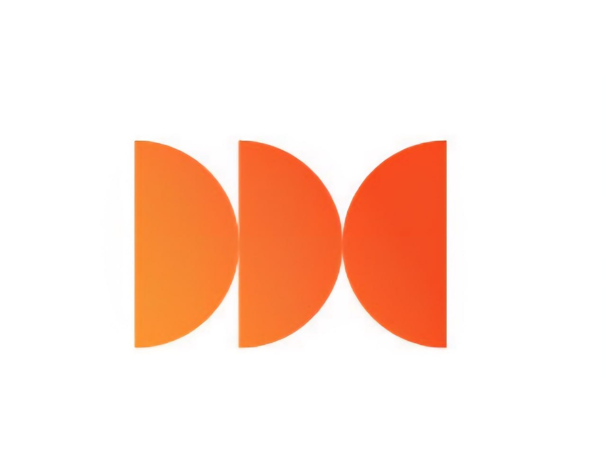

Обучение работе в AMOCRM¶
Полный курс для администраторов и кураторов клиники
Работа со сделками
Работа с задачами
Работа с воронками
Работа с пациентами
Автоматические сообщения
Источники трафика
Контроль качества
KPI и дисциплина
-
Знакомство с AMOCRM2Воронки и этапы работы
-
Карточка сделки и задачи
-
Автоматизация и источники трафика
Навигация
Структура обучения: 4 блока¶
-
Знакомство с amoCRMВход, интерфейс, рабочий стол, разделы
-
Воронки и этапы
Первичка, вторичка, Call Center, упущенные
- Карточка сделки и задачи
Поля, комментарии, задачи, закрытия, чек-лист смены
- Автоматизация, трафик и аналитика
Боты, WhatsApp, теги, источники, маркетинг
DEMOkrat dental clinic · amoCRM training02/74 Цель курса
Главный результат обучения¶
Пациент не должен теряться ни на одном этапе
- каждая заявка обработана в первые 5–15 минут;
- у каждой сделки есть актуальная задача;
- каждый разговор зафиксирован понятным комментарием;
- этап сделки отражает реальную ситуацию пациента;
- источник трафика заполнен корректно;
- в конце смены нет просрочек, сделок без задач и расхождений. DEMOkrat dental clinic · amoCRM training03/74
БЛОК 1. Знакомство с amoCRM¶
Разбираем вход в систему, главные разделы, рабочий стол, задачи, контакты, аналитику и ежедневный контроль.
DEMOkrat dental clinic · amoCRM training04/74
Что такое amoCRM¶
amoCRM — облачная CRM-система для работы с пациентами, заявками, звонками, задачами и аналитикой.
- единая база пациентов;
- история всех коммуникаций;
- контроль звонков и задач;
- ведение пациентов по воронкам;
-
автоматические сообщения пациентам;
-
контроль администраторов и кураторов;
- отчетность по заявкам и записям;
- аналитика рекламы;
- системная работа с упущенными пациентами;
- снижение хаоса в операционной работе. DEMOkrat dental clinic · amoCRM training05/74
Как войти в систему¶
- Получить ссылку для доступа от руководителя.
- Открыть ссылку в браузере: Chrome, Яндекс, Edge, Opera.
- Ввести логин.
- Ввести пароль.
- Нажать «Войти».
Система облачная: вход возможен с любого компьютера через браузер.DEMOkrat dental clinic · amoCRM training06/74
Основные разделы amoCRM¶
Рабочий стол
Контроль показателей
Сделки
Работа с пациентами
Задачи
Основной рабочий раздел
Списки
Контакты пациентов
Аналитика
Звонки и отчеты
DEMOkrat dental clinic · amoCRM training07/74
Рабочий стол: что контролируем¶
- сделки без задач;
- просроченные задачи;
- лиды за день;
- закрытые сделки;
- воронка первичных пациентов;
-
воронка вторичных пациентов;
-
диаграмма звонков за сегодня;
- количество звонков по пользователям;
- качество обработки заявок;
- общая дисциплина работы сотрудников. Ежедневно сотрудники отправляют скриншот рабочего стола руководителю.DEMOkrat dental clinic · amoCRM training08/74
Раздел «Сделк軶
В разделе «Сделки» ведется основная работа с пациентами.
- каждая сделка — это отдельная история пациента;
- сделки распределены по воронкам;
- воронки показывают путь пациента;
- этап сделки должен соответствовать реальной ситуации;
- по сделке обязательно должна стоять задача. DEMOkrat dental clinic · amoCRM training09/74
Раздел «Задач軶
Это основной рабочий раздел администратора.
- просроченные задачи;
- задачи на сегодня;
- задачи на завтра;
- задачи на неделю;
- задачи на будущее;
- быстрый переход в карточку сделки.
В конце смены просроченных задач быть не должно.DEMOkrat dental clinic · amoCRM training10/74
Раздел «Списк軶
- хранятся все контакты пациентов;
- можно искать пациента по имени или телефону;
- можно проверить, есть ли контакт в базе;
- можно перейти в карточку контакта;
- видно общее количество контактов.
Перед созданием новой сделки полезно проверить, нет ли уже такого пациента в базе.DEMOkrat dental clinic · amoCRM training11/74
Раздел «Аналитик໶
Основная вкладка для работы — «Звонки».
- входящие звонки;
- исходящие звонки;
- пропущенные звонки;
-
недозвоны;
-
прослушивание звонков;
- скачивание записей;
- контроль активности сотрудников;
- проверка качества коммуникации. DEMOkrat dental clinic · amoCRM training12/74
БЛОК 2. Воронки и этапы¶
Разбираем, где должна находиться каждая сделка, как переносить пациентов и какие правила действуют в каждой воронке.
DEMOkrat dental clinic · amoCRM training13/74
4 воронки в amoCRM¶
Первичные пациенты
Новые обращения и первичные записи
Вторичные пациенты
Пациенты после визита в клинику
Call CenterХолодная база и отдельные обзвоны
Упущенные клиенты
Отказы, возражения и возврат пациентов
DEMOkrat dental clinic · amoCRM training14/74
Воронка «Первичные пациенты»¶
Воронка для всех новых обращений: звонки, сайт, реклама, карты, соцсети, рекомендации.
- Необработанная заявка
- Не дозвонились / Не берут трубку
- Дозвонились, думают о записи
- Записались на услугу
- Не пришли
- Пришли
- Закрыто и нереализовано DEMOkrat dental clinic · amoCRM training15/74
Этап «Необработанная заявк໶
Берем в работу за 5–15 минут
- новая сделка создается автоматически;
- заявки не должны задерживаться в этом этапе;
- чем быстрее обработка, тем выше шанс записи;
- если есть сделки в этом этапе — их нужно срочно обработать. DEMOkrat dental clinic · amoCRM training16/74
Этап «Не дозвонились / Не берут трубку»¶
Сюда переводим пациентов, с которыми не удалось связаться.
- пациент не берет трубку;
- линия занята или недоступна;
- пациент систематически не отвечает;
- после перевода запускается автоматическое сообщение, если бот настроен.
Работа ведется по регламенту «Механика 3/3».DEMOkrat dental clinic · amoCRM training17/74
Регламент «Механика 3/3»¶
| Срок | Действие | Задача |
|---|---|---|
| 1 день | 3 звонка → перевод в «Не дозвонились» + авторассылка | Дозвониться |
| 2 день | 3 звонка + персональное сообщение вручную | Дозвониться |
| 3 день | 3 звонка | Дозвониться |
| Через неделю | 3 звонка + рассылка | Дозвониться |
| Еще через 2 недели | 3 звонка + рассылка | Дозвониться |
| Через месяц | 3 звонка + рассылка | Можно закрывать |
Общее время работы с заявкой при постоянном недозвоне — примерно 1,5 месяца.DEMOkrat dental clinic · amoCRM training18/74
Исключения по недозвонам¶
- автоответчик закрываем после 3 звонков и сообщения;
- брак номера закрываем сразу;
- спам закрываем сразу;
- каждый недозвон фиксируем через задачу и комментарий.
Нельзя закрывать обычную заявку только потому, что пациент не ответил 1–2 раза.DEMOkrat dental clinic · amoCRM training19/74
Этап «Дозвонились, думают о запис軶
Сюда попадают пациенты, которые ответили, но пока не записались.
- думают;
- сравнивают клиники;
- не готовы принять решение;
- перенесли запись;
-
отменили запись, но остаются на связи.
-
обязательно фиксируем возражение;
- договариваемся о следующем контакте;
- ставим задачу;
- пишем понятный комментарий;
- не оставляем сделку без движения. DEMOkrat dental clinic · amoCRM training20/74
График контактов для «Думают»¶
| Контакт | Когда | Что сделать |
|---|---|---|
| 1 | Сразу после поступления сделки | Первичный звонок/сообщение |
| 2 | Через 3–4 дня | Возврат к решению |
| 3 | Через 1 неделю после 2-го | Повторная коммуникация |
| 4 | Через 3 недели после 3-го | Контроль интереса |
| 5 | Через 1 месяц после 4-го | Финальный контакт / контроль |
| 6 | По договоренности | Контрольная задача |
В конце каждого разговора обязательно договариваемся о следующей дате контакта.DEMOkrat dental clinic · amoCRM training21/74
Этап «Записались на услугу»¶
Сюда переводим пациента только при подтвержденной дате и времени визита.
- заполнить дату и время приема;
- выбрать врача;
- указать источник трафика;
- заполнить обязательные поля;
- поставить задачу «Подтверждение записи» или «Напомнить о визите»;
- зафиксировать договоренности в комментарии. DEMOkrat dental clinic · amoCRM training22/74
Регламент подтверждения записи¶
| Когда | Действие |
|---|---|
| Сразу после записи | Уходит SMS/WhatsApp с напоминанием о записи |
| За сутки | Прозвон на подтверждение |
| 10:00–12:00 | Первая волна: всем, до кого не дозвонились, пишем сообщение |
| 15:00–16:00 | Вторая волна: звоним тем, кто не ответил на сообщение |
| В день приема | Если ответа нет — звоним за несколько часов заранее |
DEMOkrat dental clinic · amoCRM training23/74
Этап «Не пришл軶
- пациент записался, но не пришел;
- не предупредил или предупредил менее чем за 15 минут;
- после 2 таких неприходов сделку можно закрывать по правилу;
- если пациент на связи и готов перезаписаться — переводим в «Дозвонились, думают».
Для непришедших отправляется автоматическое сообщение с предложением перезаписаться.DEMOkrat dental clinic · amoCRM training24/74
Этап «Пришл軶
Сюда переводятся все пациенты, которые посетили клинику.
- не важно, была только консультация или начато лечение;
- после перевода amoCRM автоматически создает сделку во вторичной воронке;
- дальнейшая работа ведется уже как со вторичным пациентом. DEMOkrat dental clinic · amoCRM training25/74
Этап «Закрыто и нереализовано» в первичке¶
- здесь остается только «мусор»: спам, брак номера, дубль;
- остальные причины должны переводить пациента в упущенную базу;
- количество причин закрытия нужно сокращать и стандартизировать;
- любое закрытие требует корректного комментария и причины. DEMOkrat dental clinic · amoCRM training26/74
Контроль первичной воронки¶
У каждой клиники своя норма. Средние ориентиры:
| Этап | Средний ориентир |
|---|---|
| Необработанная заявка | 0 сделок |
| Не дозвонились | до 120 сделок |
| Дозвонились, думают | до 300 сделок |
| Записались на услугу | около 50 сделок |
| Не пришли | 50–80 сделок |
DEMOkrat dental clinic · amoCRM training27/74
Воронка «Вторичные пациенты»¶
Воронка для пациентов, которые уже были в клинике.
- Были в клинике — этап рождения вторички;
- Лечатся с куратором — план лечения купили / продолжают лечение;
- Пришли, но не купили — план составлен, пациент ушел думать;
- Лечатся, оплата по факту — лечение без куратора;
- Профосмотр — нужен контроль через 6 месяцев или год;
- Закрыто и нереализовано — клиника отказалась или пациент не из города / переехал. DEMOkrat dental clinic · amoCRM training28/74
Этап «Были в клиник延
- сюда автоматически попадает вторичная сделка после этапа «Пришли» в первичке;
- пациент был в клинике один раз;
- дальше нужно определить следующий шаг;
- обязательно ставим задачу на контакт или следующий визит. DEMOkrat dental clinic · amoCRM training29/74
Этап «Пришли, но не купил軶
План лечения составлен, но пациент пока не продолжил лечение.
- первое сообщение сразу после визита;
- первый звонок через 3–4 дня;
- второй звонок через неделю после первого;
- третий звонок через месяц после второго;
- при недозвоне обязательно пишем персональное сообщение. DEMOkrat dental clinic · amoCRM training30/74
Работа с пациентами «Лечатся с кураторо컶
- после каждого приема ставим задачу «Контроль» или «Куда дальше»;
- не упускаем прогресс пациента;
- после сложных процедур ставим задачу на следующий день — узнать о самочувствии;
- если пациент записан на несколько приемов, сообщение о записи расписываем сразу по всем приемам. DEMOkrat dental clinic · amoCRM training31/74
Работа с «Профосмотро컶
Через 6 месяцев¶
- пациент стабильно делает гигиену;
- часто проверяет состояние зубов;
- часто лечится;
- нужен регулярный контроль.
Через 1 год¶
- для всех остальных пациентов;
- после завершенного лечения;
- если регулярность посещений ниже. DEMOkrat dental clinic · amoCRM training32/74
Воронка Call Center¶
- используется для холодной базы;
- подходит для новых клиник или специальных обзвонов;
- если заявок в воронке нет — работать в ней не нужно;
- источник трафика у таких сделок обычно «Холодная база». DEMOkrat dental clinic · amoCRM training33/74
Воронка «Упущенные клиенты»¶
Сюда попадают пациенты, по которым еще можно отработать возражение.
- слишком дорого;
- есть свой доктор;
- не устроили условия;
- отложили решение;
- ушли думать и не вернулись.
Из 10 упущенных пациентов можно вернуть 2.DEMOkrat dental clinic · amoCRM training34/74
БЛОК 3. Карточка сделки и задачи¶
Разбираем заполнение карточки, постановку задач, комментарии, правила закрытия, дубли и чек-лист смены.
DEMOkrat dental clinic · amoCRM training35/74
Карточка сделки¶
Карточка сделки — основной рабочий инструмент.
- ФИО и контакты пациента;
- ответственный;
- оператор;
- источник трафика;
- дата и время приема;
-
врач;
-
история звонков и сообщений;
- задачи;
- примечания;
- важные комментарии;
- этап воронки;
- автоматические поля рекламы. DEMOkrat dental clinic · amoCRM training36/74
Ответственный по сделке¶
- ответственный ставится автоматически;
- если по первичке стоит руководитель — меняем на администратора;
- идеально: в первичной воронке ответственным по сделкам является администратор;
- задачи ставятся на того, кто должен выполнить действие. DEMOkrat dental clinic · amoCRM training37/74
Поле «Бюджет»¶
Поле системное, удалить его нельзя, но в работе клиники оно не ведется.
- amoCRM не считает суммы лечения автоматически;
- каждый новый визит пришлось бы складывать вручную;
- поэтому поле «Бюджет» пропускаем;
- финансовые данные ведутся в других системах/таблицах. DEMOkrat dental clinic · amoCRM training38/74
Автоматические рекламные поля¶
- UTM-метки и рекламные поля заполняются автоматически;
- вручную их заполнять не нужно;
- у пациента не нужно спрашивать данные для этих полей;
- если появились рекламные поля — уточните у руководителя, какая реклама запущена.
Администратор должен понимать инфоповод, по которому пациент оставил заявку.DEMOkrat dental clinic · amoCRM training39/74
Обязательные поля карточки¶
| Поле | Как заполнять |
|---|---|
| Оператор | Кто прозвонил / взаимодействовал с пациентом |
| Куратор | Заполняется, когда пациент пришел и понятно, кто его ведет |
| Источник трафика | Как пациент узнал о клинике |
| Дата и время приема | Выбирается из календаря / корректируется вручную |
| ФИО врача | Выбирается из списка |
| Возрастная группа | По дате рождения пациента |
| План лечения составлен | Только после визита, не заранее |
DEMOkrat dental clinic · amoCRM training40/74
Если поле не заполнено¶
amoCRM не даст сохранить перевод сделки
- обязательные поля подсветятся красным;
- система покажет, что нужно дозаполнить;
- перед переводом сделки проверяем карточку;
- лучше заполнить данные сразу после разговора. DEMOkrat dental clinic · amoCRM training41/74
Комментарии к сделкам: обязательное правило¶
Комментарии пишутся по всем сделкам.
- Чем интересуется пациент?
- Какая ситуация?
- Какое возражение / почему не записался?
- На чем договорились?
- Какой следующий шаг уходит в задачу?
Все важные комментарии должны быть зафиксированы. Важное примечание можно закрепить в карточке.DEMOkrat dental clinic · amoCRM training42/74
Пример хорошего комментария¶
Пациент интересуется имплантацией. Был на консультации в другой клинике. Сомневается из-за стоимости. Рассматривает рассрочку. Договорились созвониться в пятницу после 15:00. Поставлена задача «Связаться».
- понятно, что хочет пациент;
- понятно, почему не записался;
- понятно, что делать дальше;
- следующий контакт зафиксирован задачей. DEMOkrat dental clinic · amoCRM training43/74
Главное правило задач¶
У каждой сделки должна быть задача
- сделка без задачи = риск потери пациента;
- задача должна иметь дату, время и тип;
- задача должна быть понятна другому сотруднику;
- после выполнения обязательно фиксируем результат. DEMOkrat dental clinic · amoCRM training44/74
Типы задач¶
| Тип | Когда использовать |
|---|---|
| Связаться | Нет точной договоренности / передача информации / рассылки |
| Дозвониться | Пациент не выходит на связь |
| Срочно | Нельзя переносить, договоренность именно на этот день |
| Профосмотр | Звонок или сообщение на профосмотр |
| Профгигиена | Приглашение на гигиену |
| Уточнить у доктора | Нужно получить информацию от врача |
| Звонок заботы | Самочувствие / забота после процедуры |
| Подтверждение записи | Подтверждение визита |
| Собрать ОС | Обратная связь после лечения |
DEMOkrat dental clinic · amoCRM training45/74
Как поставить задачу¶
- В карточке сделки выбрать «Задача».
- Указать дату.
- Указать время или оставить на весь день, если точного времени нет.
- Проверить ответственного.
- Выбрать тип задачи.
- Написать краткий понятный комментарий.
- Сохранить задачу.
Если договорились о конкретном времени звонка — ставим конкретный интервал, а не задачу на весь день.DEMOkrat dental clinic · amoCRM training46/74
Как выполнить задачу¶
- Открыть задачу.
- Позвонить / написать пациенту.
- Зафиксировать результат.
- Нажать «Выполнить».
- При необходимости поставить следующую задачу.
Пример результата: «Подтвердила визит на 31.10 в 11:00».DEMOkrat dental clinic · amoCRM training47/74
Срочные задачи: сроки¶
| Ситуация | Максимальный срок без веской причины |
|---|---|
| Срочная терапия / хирургия | 1–2 дня |
| Протезирование / имплантация | 3–4 дня |
В конце каждого звонка стараемся утвердительно договориться о следующей дате контакта.DEMOkrat dental clinic · amoCRM training48/74
Правила закрытия лидов¶
Самостоятельно закрывать лиды можно только по причинам:
Спам
Брак номера
Дубль
По всем остальным причинам заявки закрываются только через управленца / куратора.DEMOkrat dental clinic · amoCRM training49/74
Процесс закрытия через куратора¶
- Выбирается 1 день в неделю, например пятница.
- Администратор ставит подробный комментарий, почему заявку нужно закрыть.
- Администратор ставит задачу «Закрыть» на куратора именно на пятницу.
- Куратор выделяет 1–2 часа на разбор задач.
- Если лид закрывается — закрываем по всем правилам. DEMOkrat dental clinic · amoCRM training50/74
Правила закрытия дублей¶
- указать правильную причину закрытия;
- добавить комментарий с ФИО пациента;
- вставить ссылку на действующую сделку;
- в действующей сделке вставить ссылку на дубль;
- если номера разные — добавить второй номер в действующую сделку. DEMOkrat dental clinic · amoCRM training51/74
Чек-лист закрытия смены¶
Нет сделок без задач
Нет просроченных задач
Все сделки обработаны
Нет расхождений между amoCRM, Айдентом и таблицей
Все закрытые сделки закрыты по правилу
Разговор на линии стремится к 1,5 часам в день, для клиник от 6 кресел — к 2 часам
DEMOkrat dental clinic · amoCRM training52/74
Сверка расхождений¶
- в конце каждой смены сверяем amoCRM и таблицы;
- проверяем расхождения между amoCRM, Айдентом и таблицей;
- если обнаружены ошибки — исправляем до конца смены;
- не переносим хаос на следующий день. DEMOkrat dental clinic · amoCRM training53/74
Использование ИИ для отчета после приема¶
Для качественной передачи информации после приема можно надиктовывать отчет и обучать ИИ структурировать его.
- психотип пациента;
- с чем пришел;
- какой настрой;
- заинтересован или нет;
- какие вопросы задавал;
- какие возражения были;
- особенности и договоренности;
- следующие зафиксированные шаги. DEMOkrat dental clinic · amoCRM training54/74
Работа с листом ожидания¶
- ведется через amoCRM и типы задач;
- дополнительно может вестись через Айдент;
- помогает быстро закрывать окна в расписании;
- помогает перезаписывать пациентов;
- увеличивает загрузку клиники. DEMOkrat dental clinic · amoCRM training55/74
БЛОК 4. Автоматизация, источники трафика и аналитика¶
Разбираем автоматические сообщения, ботов, WhatsApp, теги, источники трафика, маркетинг и контроль аналитики.
DEMOkrat dental clinic · amoCRM training56/74
Автоматические сообщения¶
amoCRM может автоматически отправлять пациентам сообщения в WhatsApp.
- после новой заявки;
- если не удалось дозвониться;
- после записи на прием;
- с информацией о враче;
- если пациент не пришел;
- после визита — сбор обратной связи.
Сообщения копировать вручную не нужно, если бот настроен.DEMOkrat dental clinic · amoCRM training57/74
Сообщение после новой заявки¶
- благодарность за обращение;
- название клиники;
- адрес;
- номер телефона;
- сайт.
Цель: пациент понимает, кто ему будет звонить и с какого номера.DEMOkrat dental clinic · amoCRM training58/74
Сообщение при недозвоне¶
- клиника сообщает, что не смогла дозвониться;
- предлагает написать удобное время для связи;
- дает номер телефона клиники;
- пациент может ответить в WhatsApp;
- сообщение подтягивается в карточку сделки. DEMOkrat dental clinic · amoCRM training59/74
Сообщение после записи¶
- дата приема;
- время приема;
- ФИО врача;
- адрес клиники;
- просьба взять паспорт;
-
просьба подойти заранее.
-
ссылка на маршрут в Яндекс Картах;
- ссылки на отзывы;
- фото врача;
- описание врача;
- напоминание предупредить при изменениях. DEMOkrat dental clinic · amoCRM training60/74
Сообщение «Не пришл軶
- сообщаем, что пациент не пришел;
- предлагаем перезаписаться;
- просим написать удобное время или перезвонить;
- не создаем ощущения «черного списка»;
- возвращаем пациента в коммуникацию. DEMOkrat dental clinic · amoCRM training61/74
Сбор обратной связи¶
- после визита отправляется NPS-опрос;
- ответы попадают в таблицу клиники;
- опрос помогает контролировать сервис;
- можно дорабатывать ботов и шаблоны под клинику. DEMOkrat dental clinic · amoCRM training62/74
Источники трафика: зачем заполнять точно¶
Аналитика должна сходиться
- руководство оценивает эффективность рекламы;
- маркетинг принимает решения на основе источников;
- ошибка администратора искажает отчетность;
- окупаемость рекламы зависит от корректной атрибуции заявок. DEMOkrat dental clinic · amoCRM training63/74
Основные источники трафика¶
- Яндекс Карты;
- Google Поиск;
- Google Карты;
- Сайт;
- Яндекс Контекст;
- VK таргет;
-
Группа ВКонтакте;
-
Instagram аккаунт;
- Рекомендации;
- Пришли с улицы;
- Звонок;
- Повторный клиент;
- Холодная база;
- Про
Докторов. DEMOkrat dental clinic · amoCRM training64/74
Как работать с тегами¶
Теги помогают понять, откуда пришла заявка и по какому инфоповоду.
- заявка с сайта → источник «Сайт»;
- Яндекс Карты → источник «Яндекс Карты»;
- ВКонтакте → платная реклама VK;
- Про
Докторов → портал Про
Докторов; - импланты, коронки, лендинг → инфоповоды рекламной кампании.
Если тег есть, а источника нет — попросите руководителя добавить корректный источник трафика.DEMOkrat dental clinic · amoCRM training65/74
Когда amoCRM не может определить источник¶
- если пациент звонит на прямой номер клиники;
- если нет подменных номеров на площадках;
- если обращение пришло не через интегрированный канал;
- если тег «Посетители без рекламной кампании».
В этих случаях обязательно спрашиваем: «Как вы о нас узнали?»DEMOkrat dental clinic · amoCRM training66/74
Маркетинговый контекст: бюджет рекламы¶
| Период | Ориентир бюджета |
|---|---|
| 1 месяц | 250 000–350 000 ₽ в зависимости от модели запуска |
| 2 месяц | 350 000 ₽: контекст + таргет |
| Далее | 100 000 ₽ на каждое кресло |
| Минимальное пополнение | 60 000 ₽ |
| Пополнение | не менее чем за 10 дней до окончания средств |
DEMOkrat dental clinic · amoCRM training67/74
Почему рекламу нельзя ставить на паузу¶
- окупаемость оценивается только через 6–8 месяцев;
- пользователи редко записываются с первого касания;
- обычно нужно 3–5 контактов;
- алгоритмы рекламных платформ обучаются со временем;
- пауза обнуляет прогрев аудитории и сбивает обучение алгоритмов.
Стоимость лида не является единственным и главным показателем эффективности.DEMOkrat dental clinic · amoCRM training68/74
Почему администратор влияет на окупаемость рекламы¶
- корректно указывает источник трафика;
- быстро обрабатывает заявки;
- фиксирует возражения;
- ставит задачи и не теряет пациента;
- доводит заявку до записи;
- не закрывает лид без регламента.
Маркетинг приводит заявку. CRM и администратор превращают ее в пациента.DEMOkrat dental clinic · amoCRM training69/74
Контроль показателей¶
Каждый день¶
- рабочий стол;
- просроченные задачи;
- сделки без задач;
- необработанные заявки;
- звонки.
Раз в неделю / месяц¶
- конверсия по этапам;
- количество сделок в воронках;
- статистика рекламы;
- качество комментариев;
- дисциплина закрытий. DEMOkrat dental clinic · amoCRM training70/74
Ежедневный контроль руководителя / куратора¶
- каждый день — разбор на 5-минутках с администраторами;
- раз в неделю — отчет по статистике;
- разбор просрочек и сделок без задач;
- контроль качества комментариев;
- контроль корректности источников трафика. DEMOkrat dental clinic · amoCRM training71/74
Финальные правила работы в amoCRM¶
01 Заявки обрабатываем за 5–15 минут02 У каждой сделки есть задача03 Все важное фиксируем комментарием04 Этап = реальная ситуация пациента05 Источник трафика заполнен корректно06 В конце смены нет просрочек
DEMOkrat dental clinic · amoCRM training72/74
Практическое задание после обучения¶
- Создать тестовую сделку.
- Заполнить карточку сделки.
- Указать источник трафика.
- Перевести сделку по этапам.
- Поставить задачу.
- Выполнить задачу с результатом.
- Оставить примечание.
- Проверить сделку в разделе задач. DEMOkrat dental clinic · amoCRM training73/74
Спасибо за внимание¶

Успешной работы в amoCRM!
DEMOkrat dental clinicDEMOkrat dental clinic · amoCRM training74/74